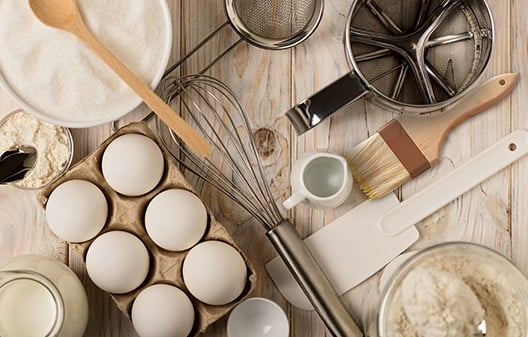

1. Preheat the oven to 425 degrees F (220 degrees C).
2. Combine water and sugar in a saucepan and bring to a boil. Cook until sugar dissolves. Remove from heat and cool to room temperature.
3. Beat eggs in a large bowl. Add evaporated milk and continue beating until combined. Add sugar water, and mix until well combined. Place tart shells on a baking sheet. Strain custard through a sieve into a large cup with a spout. Fill tart shells.
4. Bake in the preheated oven until custard puffs slightly and is mostly firm, about 20 minutes.
text to click link- 1 cups water
- 3/4 cup white sugar
- 4 eggs
- 1/4 cup evaporated milk
- 24 (3-inch) unbaked tart shells
Calories: 177
Fat: 8g
Carbs: 25g
Protein: 3g